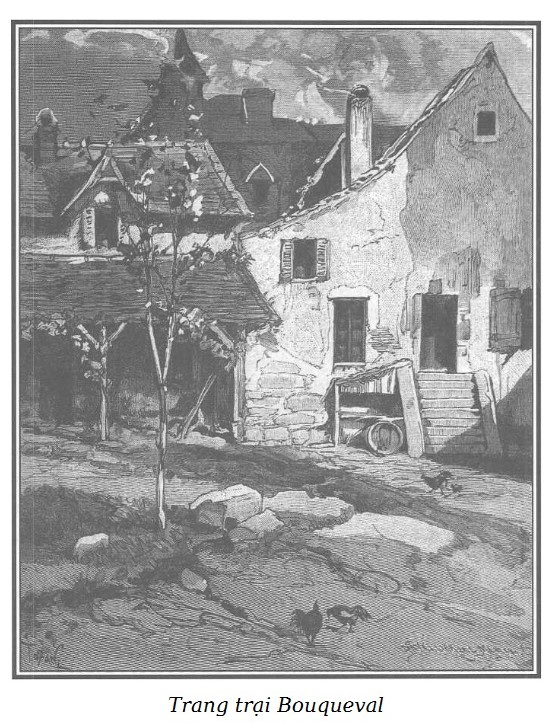

Trang trại mà Rodolphe đưa Sơn Ca đến ở ngoài đầu làng Bouqueval, một giáo khu nhỏ, biệt lập, ít người biết, ở sâu trong vùng canh tác và cách xa Écouen khoảng hai dặm*. Theo chỉ dẫn của Rodolphe, cỗ xe xuống một con dốc đứng và đi vào con đường rộng hai bên toàn anh đào và táo. Xe lăn không một tiếng động trên thảm cỏ mịn và cắt ngắn như nhiều đường hàng xã khác.
1 dặm Pháp = 9,65 ki-lô-mét.
Sơn Ca buồn bã lặng đi trong nỗi xót xa khôn nguôi khiến Rodolphe ân hận vì ít nhiều đã gây nên tâm trạng đó.

.Vài phút sau, chiếc xe đã đi qua cổng lớn của sân trại, tiếp tục đi dọc con đường dưới lùm cây xanh rồi dừng lại trước một cổng ngõ bằng gỗ cũ kĩ nấp dưới một gốc nho già lá úa đỏ vì mùa thu đã đến.
– Chúng ta đến nơi rồi, Sơn Ca ạ, cháu vui lòng không?
– Vâng, thưa ông Rodolphe… Thế nhưng, bây giờ hình như cháu lại cảm thấy xấu hổ trước bà coi trại, cháu không dám nhìn bà.
– Tại sao lại thế hả cháu?
– Thưa ông, đúng ạ, bà ấy chưa biết cháu.
Sơn Ca cố nén tiếng thở dài.
Mọi người chắc đang chờ chiếc xe của Rodolphe đến. Người đánh xe mở cửa, một người phụ nữ khoảng năm mươi tuổi ăn mặc như một người chủ trại giàu có vùng ngoại ô Paris, nét mặt buồn buồn hiền hậu đến ngay trước cửa xe và đón Rodolphe vồn vã, kính cẩn.
Sơn Ca ngượng nghịu bước xuống xe sau một lúc do dự.
– Chào bà Georges quý hóa. Bà thấy không, tôi tới rất đúng hẹn…
Rodolphe nói rồi quay lại phía người đánh xe, đặt tiền vào tay và bảo:
– Anh có thể trở về Paris.
Người đánh xe, thấp, béo, mũ kéo sụp tận mắt, mặt hầu như bị chiếc cổ lông của áo khoác che khuất, bỏ tiền vào túi, không nói gì, nhảy lên chỗ ngồi, quất ngựa và cỗ xe nhanh chóng khuất dần vào con đường cây xanh.
– Sau suốt chặng đường dài, gã đánh xe ít lời nay vội vã cái gì mà đi ngay thế? – Rodolphe nhận xét. – Kệ! Mới hai giờ, chắc gã muốn về Paris để có thể gỡ chuyến nữa trong ngày. – Rồi ông không nghĩ gì đến nhận xét ban đầu ấy nữa.
Sơn Ca đến gần ông, lo ngại, bối rối gần như hoảng sợ nói nhỏ với ông để bà Georges không nghe được:
– Trời ơi! Ông Rodolphe, xin lỗi ông, ông đã cho xe quay về… Nhưng còn mụ Ponisse? Ôi! Cháu phải trở về nhà mụ chiều nay, nếu không… mụ sẽ cho cháu là con ăn cắp. Quần áo cháu mặc là của mụ… và cháu còn nợ…
– Yên tâm cháu ạ. Chính ta phải xin lỗi cháu.
– Xin lỗi vì cái gì kia ạ?
– Vì đã không nói trước với cháu, rằng cháu chẳng còn nợ nần gì con mụ Ponisse nữa, cháu có thể vứt bỏ bộ quần áo ghê tởm này để mặc những bộ quần áo khác mà bà Georges sẽ đem đến. Bà Georges có những bộ quần áo cỡ cháu mặc. Bà sẵn sàng cho cháu mượn, cháu thấy không, bà đã bắt đầu làm bác của cháu rồi đấy.
Sơn Ca tưởng như chiêm bao. Cô hết nhìn bà Georges lại nhìn Rodolphe, không tin ở tai mình nữa. Hồi hộp và cảm động, cô hỏi:
– Thế cháu không trở về Paris nữa sao? Cháu có thể ở đây được ạ? Bà có cho phép cháu không ạ? Thế ư? Lâu đài Tây Ban Nha vừa nói lúc nãy đã thành sự thật ư?
– Chính là cái trại này. Thế là thành sự thật nhé!
– Không, không, như vậy đẹp quá, hạnh phúc quá!
– Chẳng bao giờ người ta có quá nhiều hạnh phúc đâu, Sơn Ca ạ.
– Ôi! Ông Rodolphe ơi! Tội nghiệp cho cháu, ông đừng đùa như vậy, cháu chỉ càng khổ hơn thôi.
– Cháu thân yêu, hãy tin ở ta. – Rodolphe nói với Sơn Ca vẫn với giọng trìu mến nhưng rất trang nghiêm mà cô chưa từng nghe ở ông. – Đúng, cháu có thể. Nếu cháu thấy hợp với mình, cháu có thể sống êm đềm bên bà Georges như trong bức tranh mà ta đã tả làm cháu thích thú. Tuy bà Georges không thực là bác của cháu nhưng sau khi hiểu cháu, bà sẽ thiết tha săn sóc cháu. Đối với mọi người trong trại, cháu còn là cháu gái của bà nữa kia! Như vậy địa vị của cháu sẽ hợp lý hơn. Một lần nữa, nếu cháu thích, Sơn Ca ạ. Lát nữa cháu có thể thực hiện ước mơ ban nãy của cháu. – Ông tủm tỉm. – Chúng ta sẽ dẫn cháu ăn mặc như một cô gái ở nông trại đi xem con bò yêu quý sau này của cháu, con Musette ấy, mà con bò cái tơ trắng đang chờ cái vòng cổ cháu hứa cho nó. Chúng ta cũng sẽ đến xem những bạn chim câu của cháu, rồi nhà vắt sữa. Chúng ta đi khắp trại. Ta phải giữ trọn vẹn lời hứa với cháu.
Sơn Ca chắp cả hai tay như người cầu nguyện. Sự ngạc nhiên, nỗi vui sướng, niềm biết ơn, lòng kính trọng ánh lên trên gương mặt hân hoan; mắt đẫm lệ, cô nghẹn ngào:
– Thưa ông Rodolphe, ông quả là đấng thiên sứ của Thượng đế để làm biết bao điều tốt lành cho những người khốn khổ mà ông chưa hề biết đã giải thoát họ ra khỏi nhục nhã và đói khát.
– Con gái tội nghiệp của ta! – Rodolphe trả lời với nụ cười tê tái và hồn hậu khôn tả. – Tuy ta còn trẻ nhưng ta đau khổ nhiều; điều đó cắt nghĩa tại sao ta cám cảnh trước những người đau khổ. Sơn Ca, từ nay gọi là Marie thì đúng hơn, đi với bà Georges đi. Phải, Marie, từ nay cháu mang tên đó, hiền và đẹp như con người cháu. Chúng ta còn nói chuyện tiếp, và khi ta rời xa cháu, ta sẽ rất vui mừng thấy cháu sung sướng.
Marie không nói nên lời, đến gần Rodolphe, gần như quỳ xuống, kính cẩn đỡ lấy tay Rodolphe đưa lên môi, cử chỉ chan chứa lòng biết ơn, vừa duyên dáng vừa hợp lễ.
Bà Georges đăm đắm nhìn Marie, cô đi theo bà.